Bhavika Tekwani
Technologist, also human.
CS682: Computer Vision (Spring 2018)
Assignment 3
Code
Report
Part 1 - Gray and color edges for ST2MainHall4052.jpg
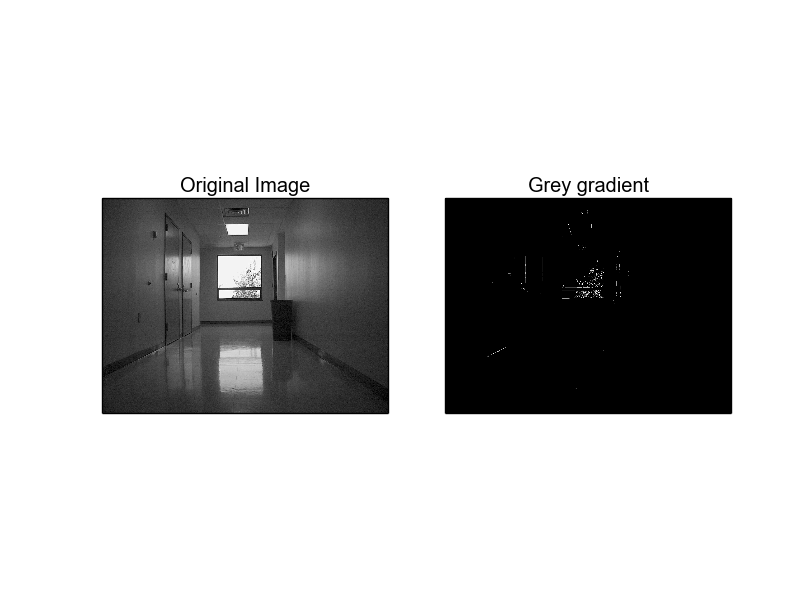
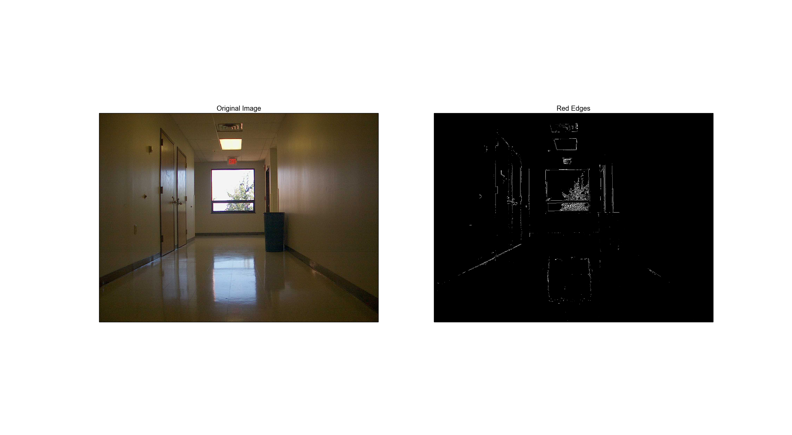
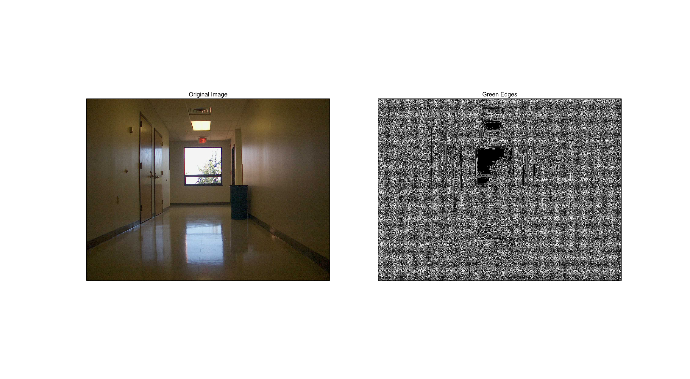
Part 2 - Gray Edge Histogram
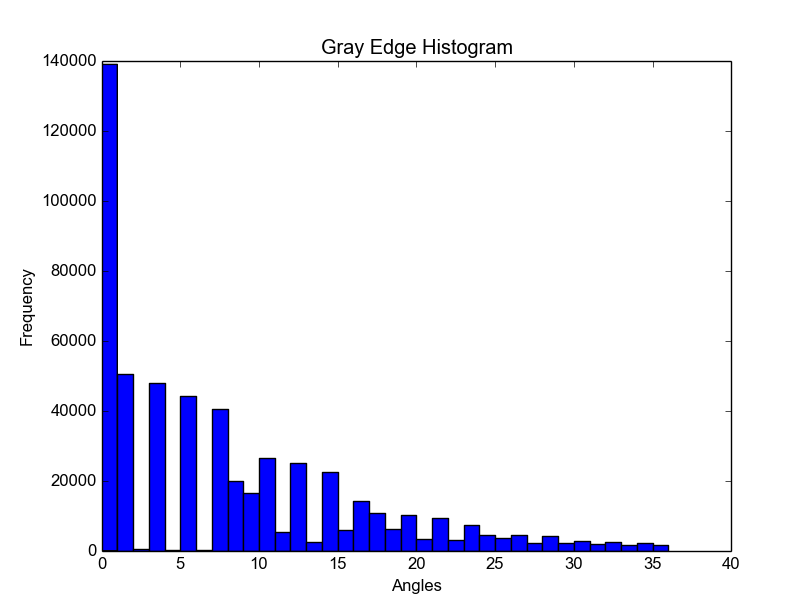
Part 3 - Color Edge Histogram
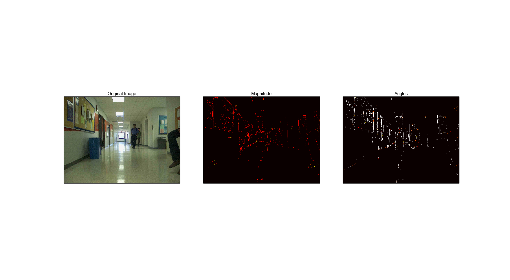
Histogram of Magnitudes for ST2MainHall4052.jpg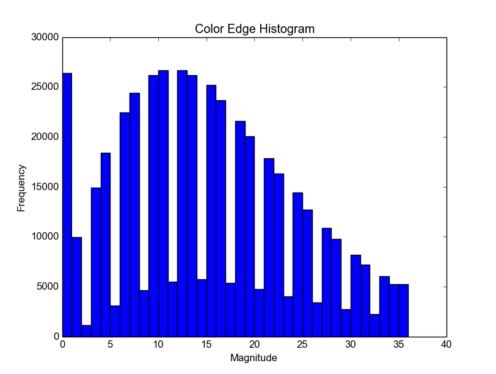
Histogram of Orientation for ST2MainHall4052.jpg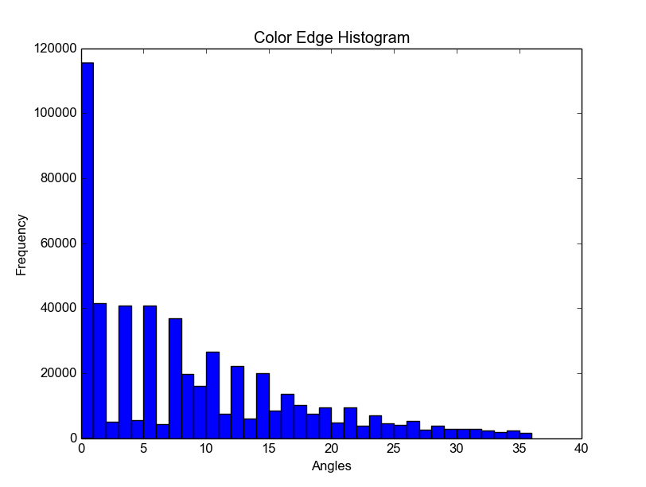
Part 5 - Histogram Intersection for Gray Edges
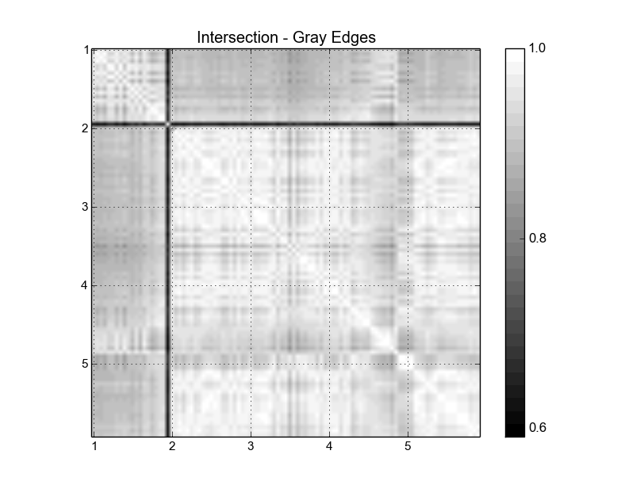
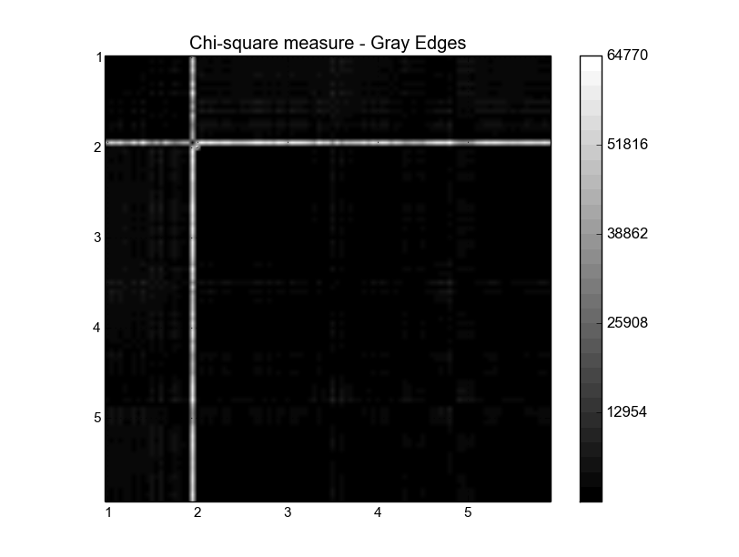
Part 5 - Histogram Intersection for Color Edges
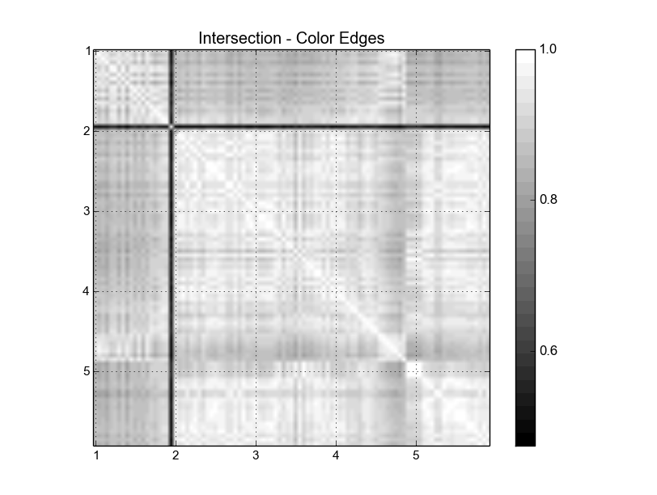
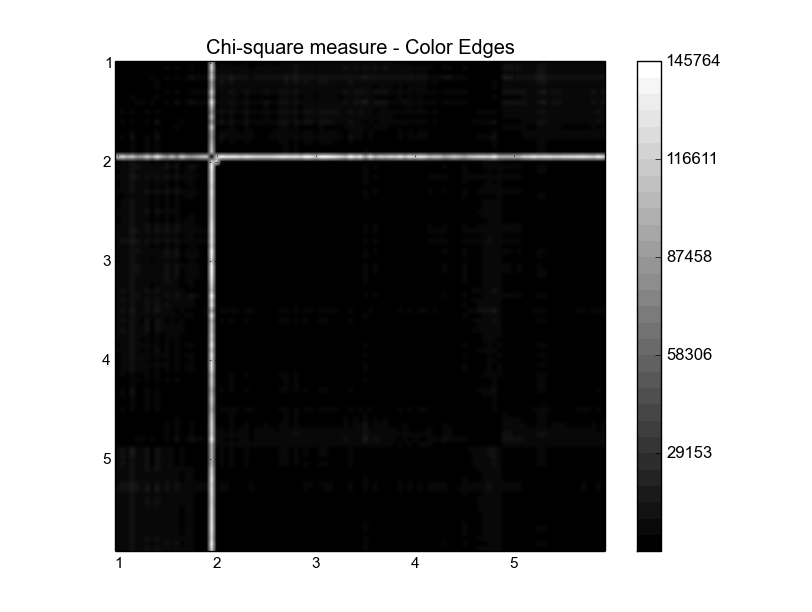